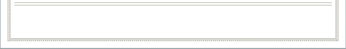

Other Projects


RFC 2616 Compliant WebServer JAVA
The project involved implementing a full-fledged RFC 2616 HTTP/1.1 web server in core Java, comparatively more powerful than Apache. The developed software provided features which includes PUT/POST/GET/Partial GET methods, easy reconfiguration & information logging, basic/digest authentication, redirection, access control, support for pipelining with parallel connections, content/transfer encoding, content negotiation.
Distributed Secured MultiParty Computation JAVA
The project involved implementing a distributed system consisting of different sites each maintaining a subset of data and collaborating with each other to produce results such as Secure Union, Secure Intersection without revealing which information belonged to which site. For example Centers for Disease Control (CDC) may want to use data mining to identify trends and patterns in disease outbreaks, such as understanding and predicting the progression of a u epidemic. Insurance companies have considerable data that would be useful but are unwilling to disclose this due to patient privacy concerns. An alternative is to have each of the insurance companies provide some sort of statistics on their data that cannot be traced to individual patients, but can be used to identify the trends and patterns of interest to the CDC. The project implemented in JAVA supports different number of hosts with different database sizes and uses commutative encryption techniques for exchanging information and performing secure distributed multiparty computations.
Dynamic Coalition System PHP
The project involved implementing a distributed consisting of airline, hotel and car reservation which dynamically can join each other to form coalition system. The project was implemented in PHP with rich user interface for each of the modules which communicate using XML-RPC based service and register their group information with a random selected central coordinator. To avoid single point of failure (i.e. to provide fault tolerance) and to improve availability/performance the information maintained by central coordinator was replicated at many sites.
BioInformatics–Protein Alignment & Modeling JAVA
The project involved implementing a configurable application to show sequence alignment for multiple protein sequences, provided as input PDB files. Also, the alignment information was required to be used further to generate an Output PDB files to identify Strand-Loop-Strand-Loop (SLS) structures of specified Amino Acid Lengths. The generated SLS model for multiple protein sequences was also transformed/rotated to align all the SLS structures over same region. The protein modeling helped in identifying similarity of sequences and their corresponding 2-D structures in the form of strands, loops and helixes.
Travel Agency System C# .NET
The project involved implementing a distributed system consisting of users and travel agents managing reservations on behalf of users. The project incorporated all security features of .NET such as parameterized queries, protection against SQL injection, DoS and buffer overflow attacks, hashed passwords in database, secured communication between distributed modules. Implemented in C# .NET (Visual Studio 2005 IDE) as front-end interface and Oracle 10g as the backend database, the project depicted a regular travel agency system to manage reservations of different car/hotel service providers.
Payroll System VC++ 6.0
The payroll system depicts a real-world payroll system for a manufacturing organization consisting of various departments and tree structured hierarchy. The system provides rich user interface different for each of the roles. The system provides features such as Earnings calculation, Deductions calculation, Incorporating overtimes/leaves, Tax Calculation, Report generation.
